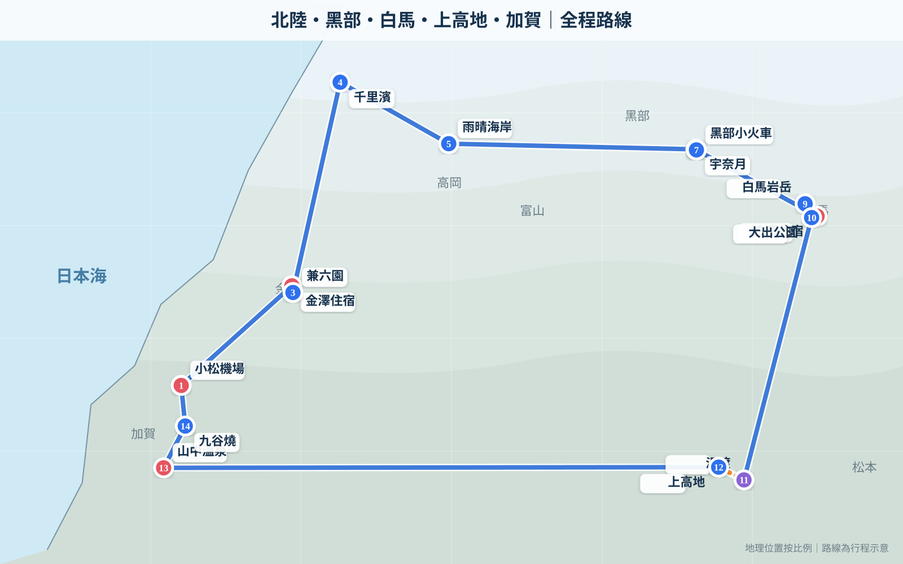
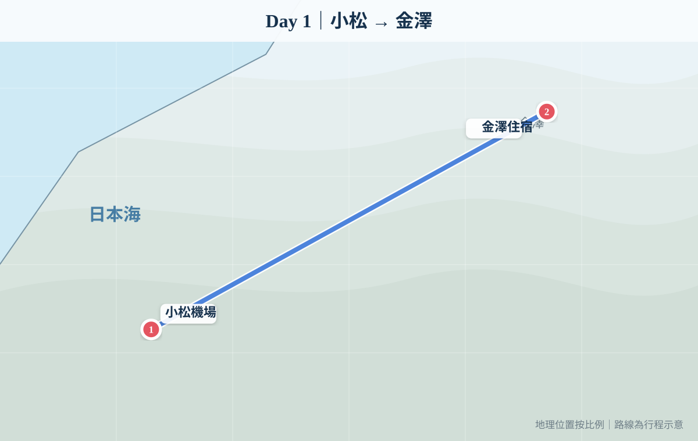
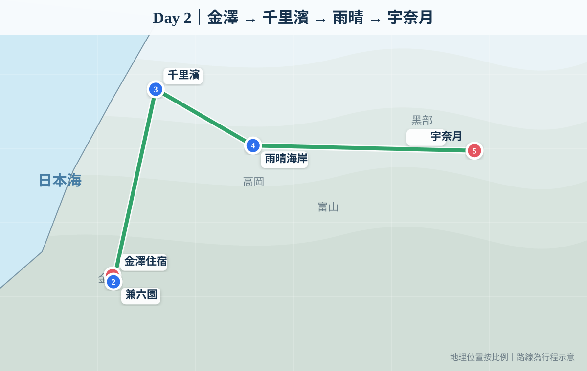
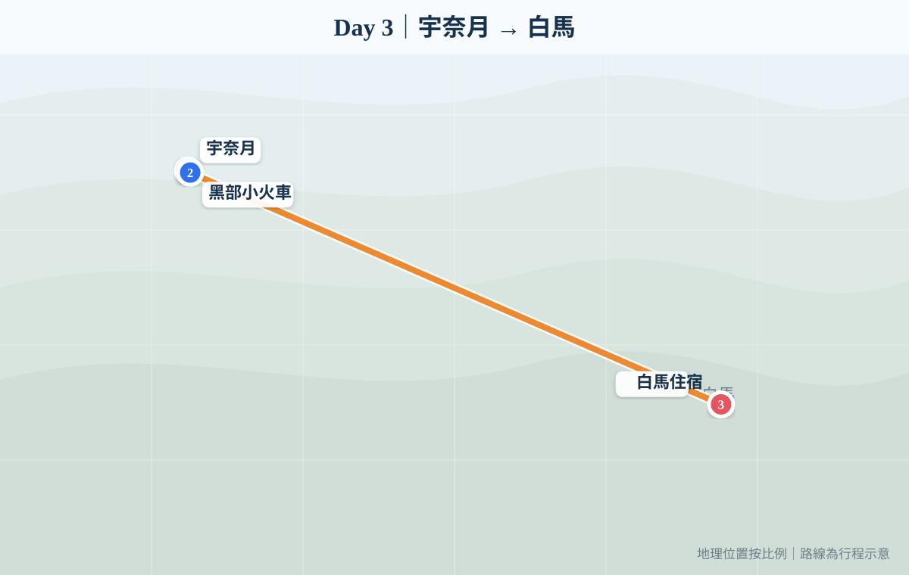
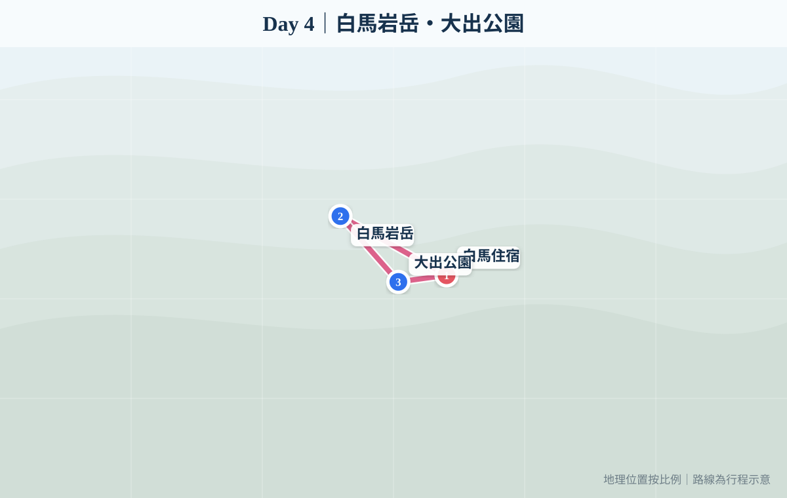
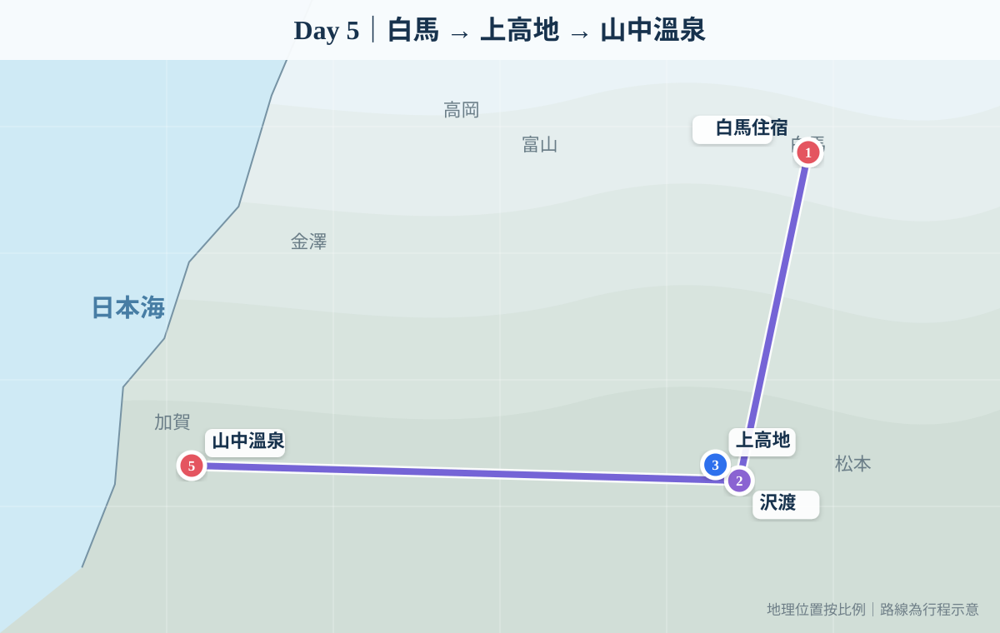
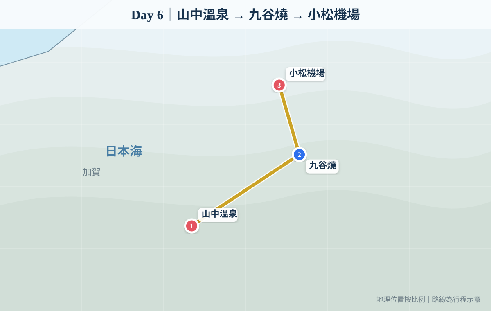

2026年9月26日 — 10月1日｜6人同行｜高速清晰地圖版

14:35 抵達小松，取車後直接前往金澤。第一晚以入住、行街、購物、晚飯為主，唔安排需要趕時間嘅正式景點。

| 由 | 去 | 距離 | 車程 |
|---|---|---|---|
| 小松機場 | 金澤住宿 | 約 38 km | 約 50 分 |
09:35航班出發，Day 1唔另外安排日本午餐。建議上機前食少少，或者用機上餐頂住，留肚畀金澤晚餐。
不另繞路主選：金沢おでん 黒百合、金沢まいもん寿司、八兆屋 駅の蔵。6人星期六晚建議預約。
18:30–19:00左右想第一晚即刻食到金澤地道味道，可以揀金澤關東煮。位置喺金澤站一帶，抵達後最方便。
最方便・地道如果一家人想食壽司，呢個選擇最容易理解，海鮮亦符合北陸旅行主題。6人同行建議預早確認等位／訂位。
壽司・一家人易食偏向加賀料理＋居酒屋風格，可以一次過試魚、治部煮等石川料理，亦比細型居酒屋較適合多人。
加賀料理・多人較舒服如果長輩想坐得舒服啲，可以揀站內／站旁較正式嘅和食或加賀料理店，唔需要再揸車入市中心。
長輩友善・舒適第一晚最值得順路影相嘅地標。夜晚燈光效果好，而且完全唔需要趕景點開放時間。
夜景・15–20分鐘買手信、甜品、酒、九谷燒小物同金澤名產都方便，亦可以順便睇定有咩想最後再買。
手信・購物如果你哋想真正行商場，可以去金澤站旁 Forus；比第一晚特登開車去其他區域舒服好多。
商場・服飾・生活雜貨Yasuecho 住宿本身靠近站區，第一晚可以純粹沿街散步，食完飯再慢慢行返酒店，對長輩最舒服。
最輕鬆早上兼六園，中午千里濱，下午雨晴海岸，傍晚入住宇奈月溫泉。

| 由 | 去 | 距離 | 車程 |
|---|---|---|---|
| 金澤住宿 | 兼六園 | 約 3 km | 約 12 分 |
| 兼六園 | 千里濱 | 約 44 km | 約 55 分 |
| 千里濱 | 雨晴海岸 | 約 53 km | 約 60 分 |
| 雨晴海岸 | 宇奈月 | 約 77 km | 約 90 分 |
雨晴站旁約1分鐘，最啱你哋路線。星期日約07:00–16:00營業，食完可以直接睇雨晴海岸，唔需要額外繞路。
雨晴海岸・順路你哋訂咗一泊二食，所以晚餐直接喺酒店食。呢日已經有兼六園＋兩個海岸景點，抵達宇奈月後唔再出去搵餐廳最舒服。
已包晚餐・一泊二食早上黑部峽谷小火車；午餐後由宇奈月方向前往白馬。

| 由 | 去 | 距離 | 車程 |
|---|---|---|---|
| 宇奈月住宿 | 黑部小火車站 | 約 1 km | 約 5 分 |
| 宇奈月／午餐 | 白馬住宿 | 約 112 km | 約 1 小時 55 分 |
今日本身想食牡蠣，呢間好啱：由黑部宇奈月溫泉站一帶開車約20分鐘，星期一11:00–17:00。店內104席，6人較容易安排。
牡蠣主題・推薦主選白馬八方嘅傳統鄉土料理，晚市約17:30–21:00。可以試信州味噌、鄉土鍋物，Day 3去到白馬後食比較有地方特色。
白馬鄉土料理如果大家想食得現代少少，可選日式＋意大利融合料理，晚市約18:00–21:00。
較新派・需預約較穩陣完整白馬日：白馬岩岳＋大出公園，下午預留自由時間享受住宿。

| 由 | 去 | 距離 | 車程 |
|---|---|---|---|
| 白馬住宿 | 白馬岩岳 | 約 5 km | 約 10 分 |
| 白馬岩岳 | 大出公園 | 約 7 km | 約 15 分 |
| 大出公園 | 白馬住宿 | 約 4 km | 約 10 分 |
直接喺白馬岩岳山頂食最順。Hakuba DELI午餐約10:00–14:30；想輕食可以去THE CITY BAKERY，一邊睇北阿爾卑斯一邊食。
唔使落山・最順路想食日本居酒屋＋清酒可以揀呢間，適合Day 4玩完白馬後慢慢食。
居酒屋・日式另一間白馬晚餐選擇，適合多人聚餐；價位較高，6人建議預約。
多人聚餐・預約全程最長一日。白馬 → 沢渡停車 → 巴士／的士入上高地 → 回沢渡取車 → 山中溫泉。

| 由 | 去 | 距離 | 時間 |
|---|---|---|---|
| 白馬住宿 | 沢渡 | 約 124 km | 約 2 小時 20 分 |
| 沢渡 | 上高地 | 約 15 km | 巴士／的士約 30 分 |
| 沢渡（取車） | 山中溫泉 | 約 222 km | 約 3 小時 50 分 |
河童橋旁最方便。約11:00–15:00，128席，主打山賊燒定食、咖喱等；官方資料顯示不接受座位預約，所以建議避開12:00正午最旺時間。
上高地・河童橋山中溫泉內較正式但唔過份隆重嘅選擇，晚市約18:00–21:00，星期日休息；你哋9/30係星期三，可以作主選。
山中溫泉・加賀料理較輕鬆嘅食堂型選擇，晚市約17:00–21:00，星期四休息；星期三入住可以食。
輕鬆・地道早餐後九谷燒購物；之後前往小松機場還車，15:20 起飛回香港。

| 由 | 去 | 距離 | 車程 |
|---|---|---|---|
| 山中溫泉 | 九谷燒 | 約 14 km | 約 20 分 |
| 九谷燒 | 小松機場 | 約 19 km | 約 30 分 |
最穩陣做法係還車後先喺機場食。名物「小松うどん」，營業約09:00–14:30，時間啱你哋15:20航班。
機場內・最穩陣如果唔想食烏冬，小松機場2樓仲有意大利風Cafe餐廳同金澤咖喱類選擇，食完就直接過安檢。
機場內・零趕路小雨：照行街食飯。
大雨：集中金澤站、百番街、Forus。
小雨：兼六園照去，海岸按能見度。
大雨：Cut 千里濱／雨晴，改室內景點。
普通雨：先查列車運行。
停駛：宇奈月室內活動＋提早去白馬。
小雨：有能見度可上岩岳。
大雨／大霧：Cafe、溫泉、Chalet 慢遊。
小雨：縮短步行路線。
大雨／強風：取消上高地，提早前往山中溫泉。
落雨：九谷燒購物大多室內，影響較小。
13-23 Yasuecho, 金澤, 日本 920-0854
宇奈月溫泉
白馬｜連住兩晚
Yamanaka Onsen KAJIKASO